The weeks after the holidays are when a room feels barest. The tree is gone, the days are short, and the overhead light makes everything look flat.
The fix is not more objects. It is warmer light, heavier texture and one or two living things, added in that order.
These 22 ideas cover lamps, fireplaces, pillows, chairs, shelves and trays, each with the number or placement that makes it work. Read the five rules first.

Five Rules for a Warm Winter Room
- Choose warm white bulbs. Look for 2700K on the box. It costs the same as cool white and changes the room more than any new decor.
- Light the room from three levels. A floor lamp, a table lamp and a candle give low, even light in place of one hard overhead.
- Layer textures inside one palette. Knit, boucle, wool and wood in a single color family look rich without adding a single object.
- Leave one surface empty. A warm room has a place for the eye to rest. Crowded surfaces feel stuffy, not cozy.
- Keep something green in view. A plant or a few branches keeps the dark months from feeling flat.
Warm Light First
1. Replace One Overhead Light With a Lamp
Swap one overhead light for a lamp and the room changes at once. A woven base and a linen shade, like this pair on a round side table, cast an amber glow that cool bulbs cannot match.
Look for 2700K on the bulb box. That number is the color temperature, and 2700K is the soft white of an old-fashioned bulb.
Set the bottom of the shade at about eye level when you are seated, so you see the glow and not the bulb.
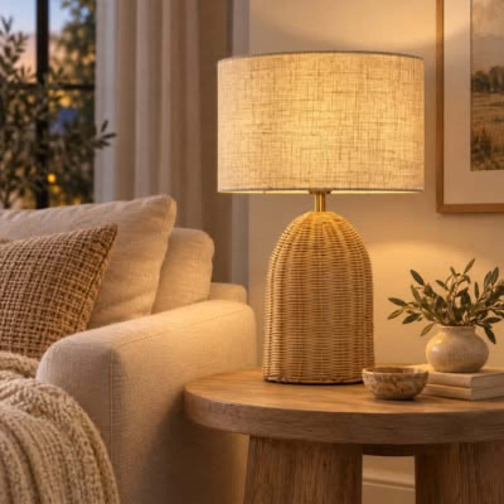
2. Fill the Dark Corner With a Floor Lamp
Dark corners shrink a room in winter. A floor lamp in the corner fixes that faster than any piece of furniture.
Place it at the end of the sofa, about 6 inches off the arm, so you can read by it, as this one does.
Choose a shade open at the top and bottom so light also washes up the wall, which makes the ceiling feel higher.
Add a pair of plants and a pot of dried grass nearby so the lamp does not stand alone.
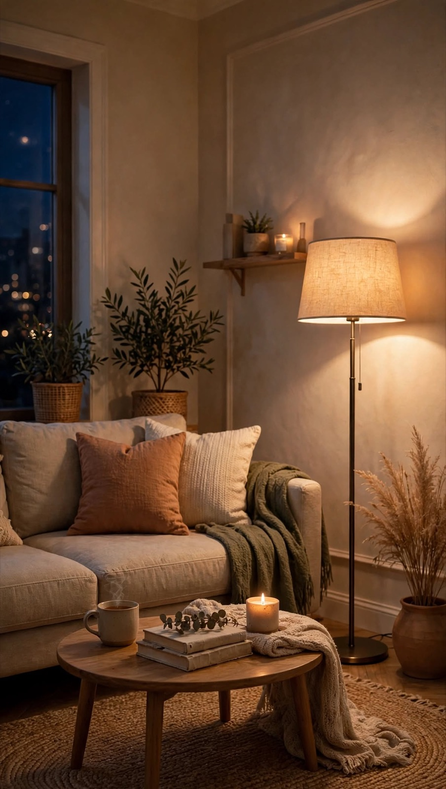
3. Build a Corner From Three Lights
Warmth comes from several small lights, not one big one. A floor lamp, a shelf strand and a candle make three pools of light in one corner.
Keep every bulb the same color temperature or the corner turns patchy.
Aim the arc of a floor lamp over the chair, as in this room, so the light lands on the page.
A plug-in dimmer works with most table and floor lamps and lets you lower the light at night.
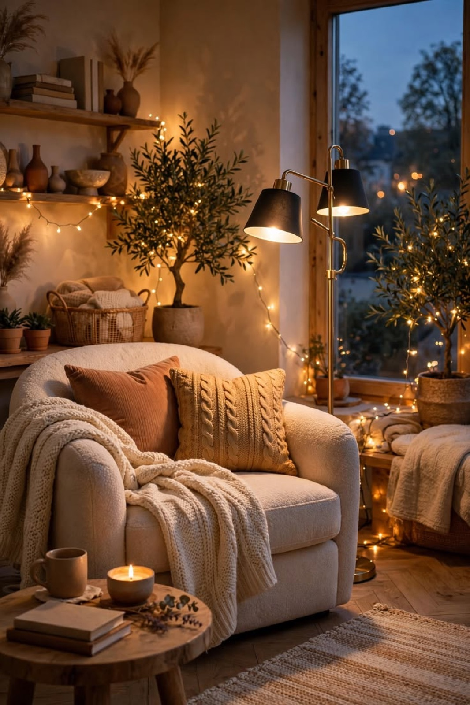
4. String Lights Along the Shelf Edge
Fairy lights do not have to wait for December. Tuck a warm-white strand along a shelf edge and it looks like built-in lighting.
Choose a plug-in set with a timer and hide the cord behind the books, as these shelves do.
Hold the strand with clear clips, not staples, which can nick the wire.
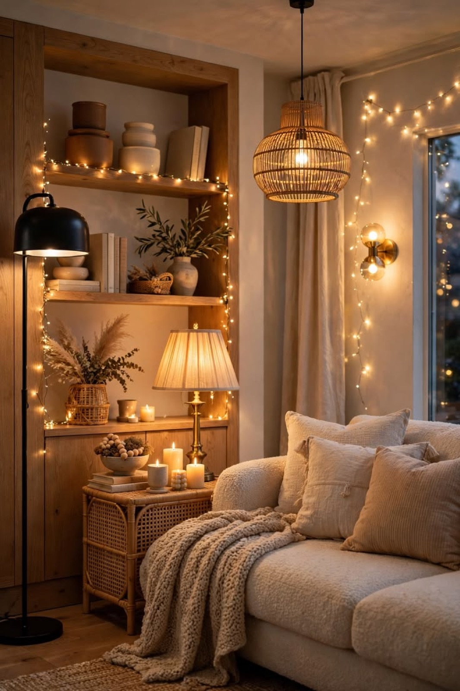
5. Swap the Real Candle for a Flameless One
Real candles and blankets do not mix. A flameless candle gives the same glow with no risk, as on this stack of knits beside a dried stem.
Pick one with a warm flicker and a timer, and set it to run six hours so it switches on at dusk.
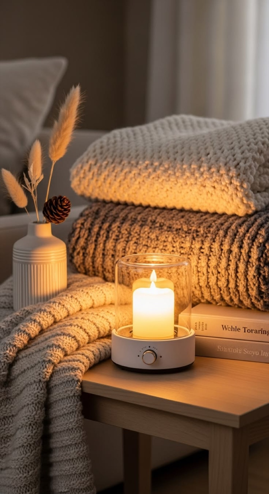
Fireplaces and the Seating Around Them
6. Point the Seating at the Fire
A fireplace is the anchor of the room, so point the seating at it. An L of sofas within about 8 feet of the hearth keeps everyone warm.
Keep the mantel simple: one big frame and one lantern here. Heat and clutter do not mix.
Candles on the coffee table add a second glow at hand height. Keep throws off the table edge.
7. Keep Mantel Garland Away From the Flame
A garland and a string of lights turn a plain mantel into a winter focal point, as on this one. A garland above a working fire is a risk, though.
Use faux greenery with a flame-retardant label, keep it off the front edge of the mantel, and burn the fire only with the screen closed.
Hang it on removable hooks so pulling it down in spring does not take the finish with it.
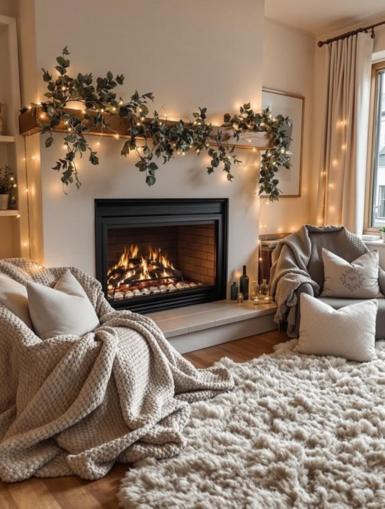
8. Lean the Print on a Small Mantel
A small fireplace needs little on top. Lean a framed print, add a candle and a few white pumpkins, as here, and stop.
Lean the print instead of hanging it so heat does not warp the frame, and so you can swap it when the season turns.
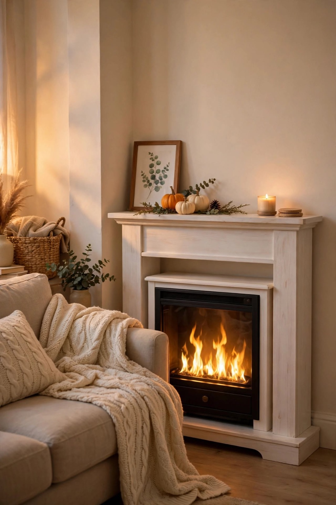
9. Choose a Round Table for Tight Seating
Round tables are the kindest shape for small rooms: no corners to bump, and traffic flows around them. This stone drum table sits in the middle of the seating and nobody clips a hip.
Style the top with a candle, a vase of dark flowers and a pumpkin, and leave half of it open.
Choose a table about two thirds the length of the sofa, and leave around 16 inches between the two.
Texture, Pillows and Rugs
10. Mix Three Textures in One Color
Four pillows beat six. Mix three textures in one color family, as the boucle, green velvet and striped linen do here.
Vary the sizes: two 20-inch squares and one lumbar pillow look intentional, and three squares look like a set.
Drape a chunky knit throw over one corner instead of folding it, and the sofa looks lived in.
Buy inserts one size larger than the covers, such as 22 inches for a 20-inch cover, for pillows that look full.
11. Lay a Shag Over a Flat Rug
Layered rugs add warmth to bare floors. A cream shag over a flat jute rug, as here, is soft underfoot and holds the heat.
Put a non-slip pad under the base rug, and keep the top rug at least 18 inches inside the base rug on every side.
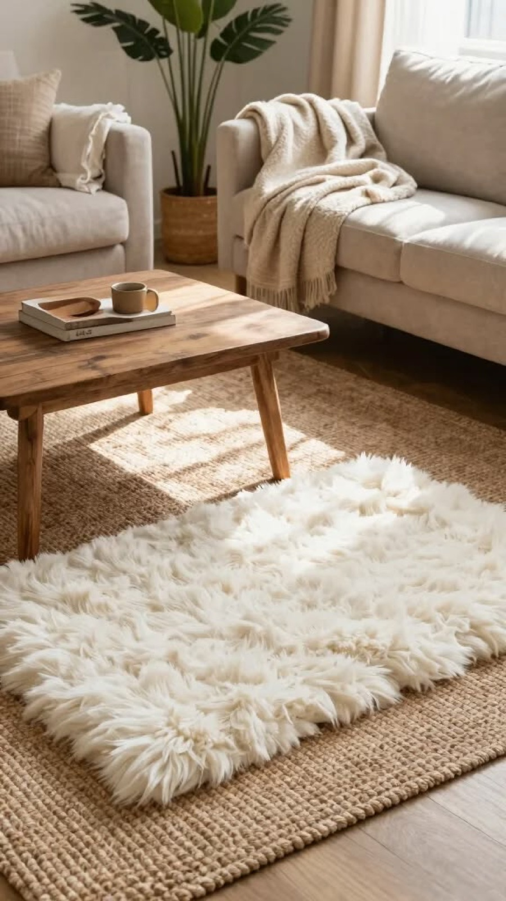
12. Warm a Gray Sofa With Jewel Tones
A gray sofa gets warmer with deep colors. Burgundy, forest green and navy look rich against it in winter.
Mix one pattern, one plaid and one solid, as these pillows do, and keep the throw neutral so the colors do not compete.
Add one fresh thing: a bowl of apples and a branch of red berries are enough on this table.
Echo a pillow color somewhere off the sofa. The berries repeat the burgundy.
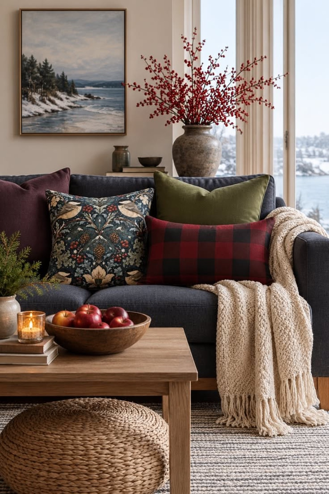
13. Pair Rust With Plaid
Rust and cream are a warm pair that lasts well past the holidays. One plaid pillow and a chunky rust throw cover the sofa here.
Put a tray with a mug and a candle on the coffee table so the table looks lived in.
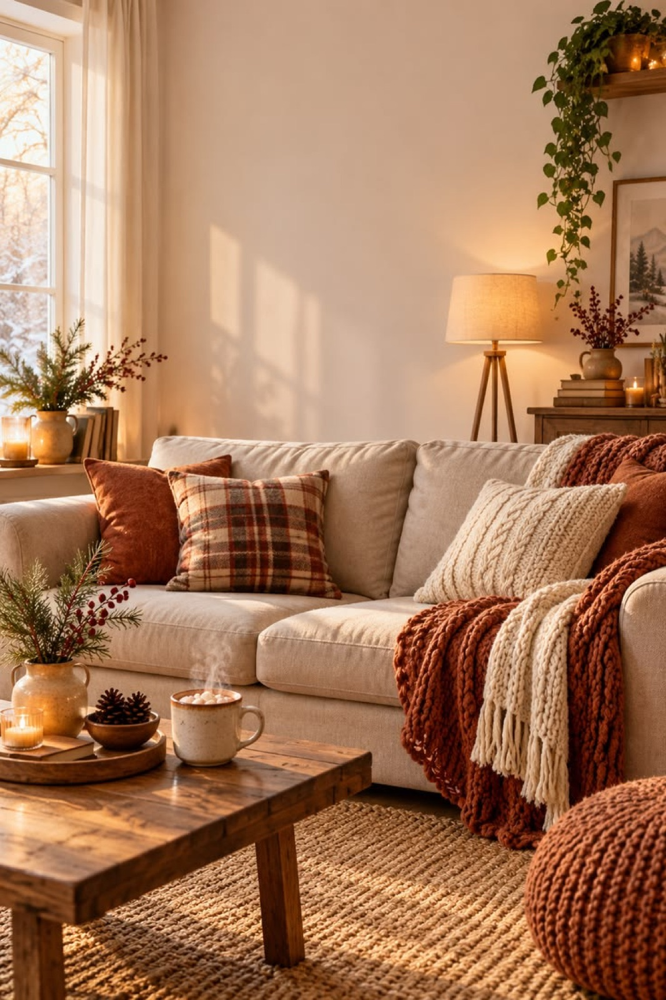
Chairs, Curtains and Beds
14. Give the Room One Seat Worth Sitting In
Every winter room needs one seat you actually want to sit in. Put a chair beside a window for daylight and a lamp for the evening.
This boucle chair gets both, with a tall bookshelf at its back.
A side table about 16 inches wide holds a mug and a book without crowding the chair.
Drape a throw over one arm, not both, so the chair still looks easy to sit in.
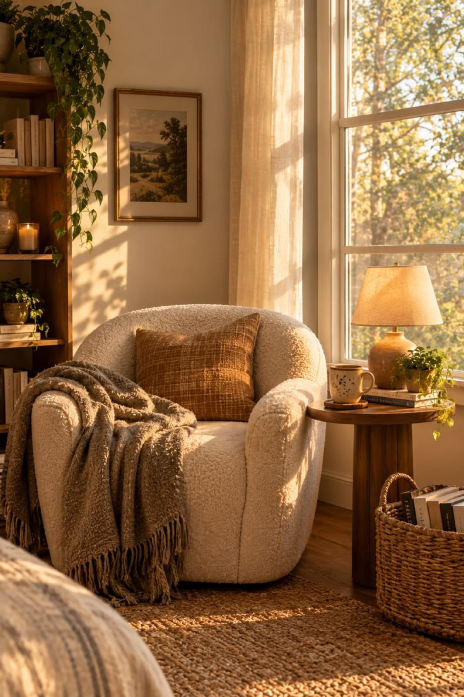
15. Line the Curtains
Curtains do real work in winter. Lined linen blocks drafts and holds in heat while letting soft light through, as these tan panels do.
Hang the rod 4 to 6 inches above the window and let the panels just touch the floor.
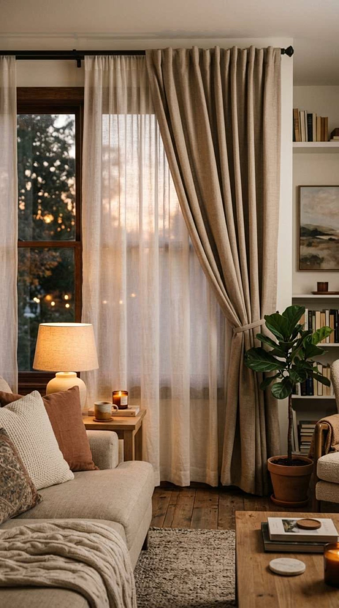
16. Pick Chocolate Against Cream
Dark brown against cream is richer than white on white. Three chocolate pillows and one brown throw at the foot do the job here.
The boucle bench at the end of the bed holds a tray with a candle and a small plant, giving you a place to sit and a place to set things down.
Keep the candle in a glass holder and never leave it burning when you sleep.
Shelves, Plants and Art
17. Hang Snow Scenes, Not Santa
Art of snow and trees suits the whole season without saying Christmas. A large mountain scene sits above two smaller framed prints of a pine and a barn here.
Hang the group so the lowest frame sits 6 to 8 inches above the back of the sofa.
Use matching wood frames for a cabin look.
Finish with a lantern holding a battery candle, so it stays safe next to the throws.
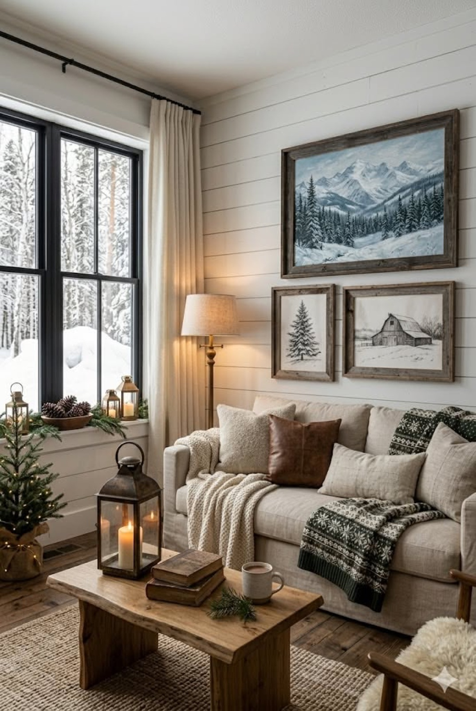
18. Give Every Shelf a Different Job
Every shelf should do one job. Books on top, a lamp and a family photo in the middle and baskets below, as in this wood bookcase.
Leave a few inches empty on each shelf, and keep the candles battery-powered where they sit near books.
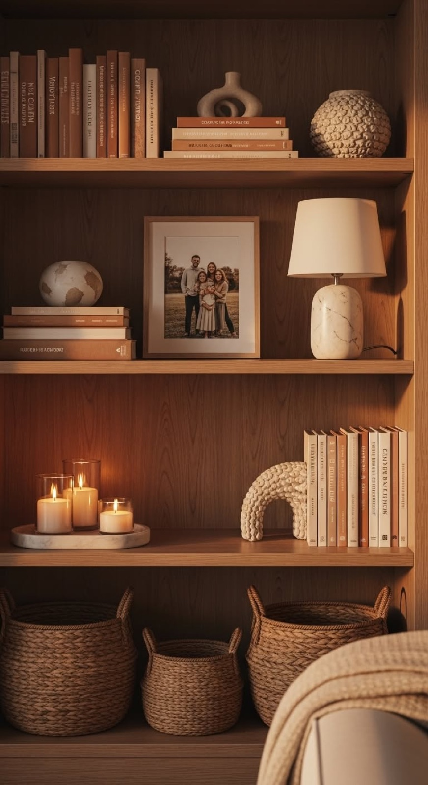
19. Stack Plants on a Stand
Plants earn their place in winter, when the garden outside is bare. A three-tier stand holds several in the footprint of one.
Put it near a window and turn each pot a quarter turn every week so growth stays even. Water less often than in summer.
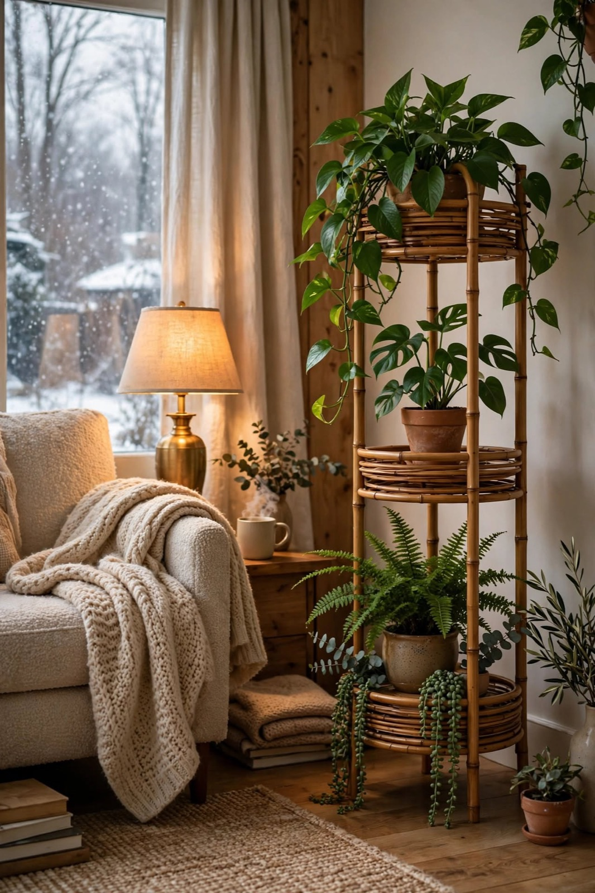
Trays, Bowls and Baskets
20. Collect Pinecones Dry and Bake Them
Pinecones are free and last until spring. Gather dry ones from the ground, not wet ones from under snow.
Bake them on foil at 200°F for 45 minutes to drive out insects and open the scales.
Mix them with pine sprigs in a wooden bowl, as here, and the centerpiece needs no upkeep.
Set a candle at one edge of the bowl for a second layer of light.
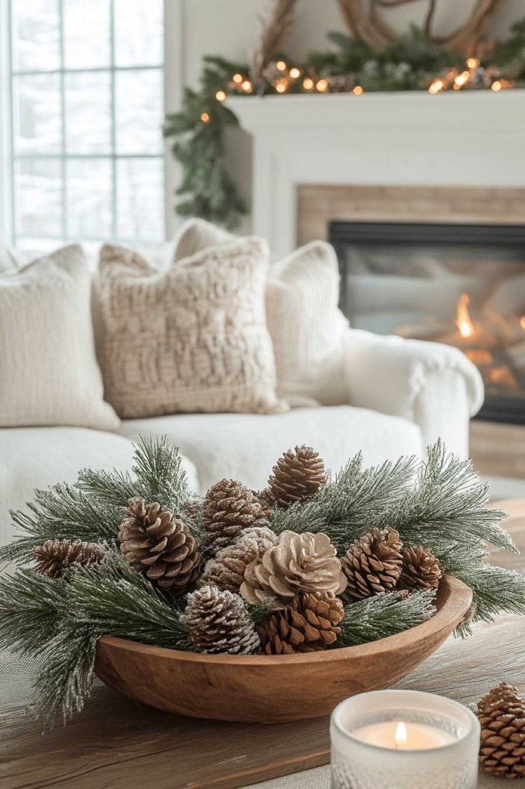
21. Keep the Tray Under 10 Inches
A tray gathers small things so they read as one piece. Keep everything on it under 10 inches tall.
Aim for one light source, one greenery piece and one cozy object. This tray has a lit house, a frosted sprig and a cocoa mug.
22. Fill a Basket for the Bare Corner
A big basket is the easiest way to dress a bare corner. Fill it with pine stems and ornaments so it looks full.
Set a plastic pot inside to hold the stems upright and keep the basket dry.
Drape a knit throw over the side, as here, so the basket looks lived in and the throw is within reach.
Common Mistakes (and Fixes)
- Mistake: cool white bulbs in the living room. Fix: swap them for 2700K bulbs before you buy anything else.
- Mistake: real flames beside throws and garland. Fix: use flameless candles near fabric and keep live flames on stone or tile.
- Mistake: six pillows on one sofa. Fix: stop at three or four and add a throw.
- Mistake: stripping out all the greenery after the holidays. Fix: keep a few branches or a plant out all winter.
- Mistake: ignoring the drafts. Fix: hang lined curtains and fit a door sweep.
Where to Start
Start with the lighting. Put warm bulbs in the lamps you already own and add one more lamp where the room goes dark.
Then add a throw, a plant and a flameless candle, and let the rest of the room stay quiet.